Asset Setup in CRYENGINE
Now we have our asset configured correctly, let's move on to the CRYENGINE side of preparing the asset to be used for production. Have an existing level open or create an empty level as the testing area for this asset.
Material
First, open the Material Editor and go to the tutorial_merged_mesh material under:
<Your_Project>\Assets\Objects\tutorial\vegetation\02\grass\tutorial_merged_mesh\
If the export process is completed successfully for the material and geometry, you should have the material as shown. Note the correct folder structure and also the same SubId setup we configured inside the DCC tool. A lot of the fields have been filled out already through the export process (note the "Diffuse" texture path already filled in). But there are still a few options that we need to set ourselves
3dsMax / Maya has no concept of a CRYENGINE surface type or shader type for example, we can only define so much within DCC tools material editor.
The rest is completed here in the CRYENGINE's Material Editor.
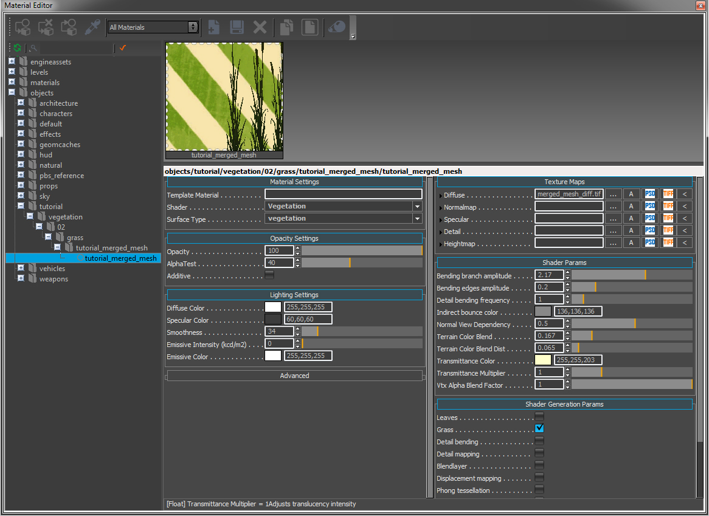
Pic1: Initial Material Editor overview
Material Settings
We only have to change two settings here the Shader and the Surface Type. We usually use the Vegetation shader and the surface type is also set to Vegetation. Select both from the drop down lists as shown in the Pic2.
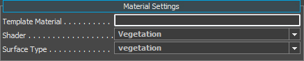
Pic2: Material settings
Opacity Settings
Here we are using the default values that we setup in 3dsMax. Opacity at 100% and the AlphaTest set to 40.
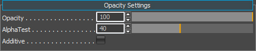
Pic3: Opacity
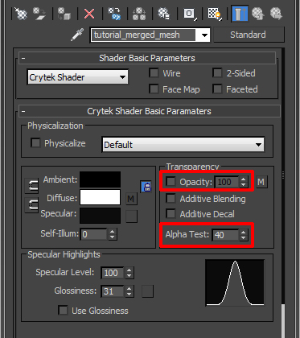
Pic4: Re-cap of where this info came from in 3dsMax
Lighting
Under the Lighting Settings, we find the color parameters. To be correctly in line with the PBS pipeline, we have to:
- Set our Diffuse Color to pure white 255,255,255.
- Set the Specular Color within the 40 - 60 range (dark grey).
- Set the Smoothness slider to a low value such as 30.
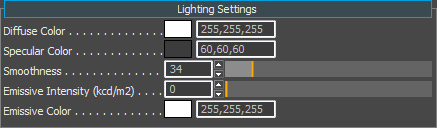
Pic5: Lighting Settings
Because we are using the Grass parameter in the shader, this means the material does not require a normalmap. In CRYENGINE, we save our smoothness value into the alpha channel of the normalmap (ddna) since this is not present in the material it reads the smoothness value directly from the Smoothness slider instead.
Texture Maps
The Texture Maps section should already have been filled out with our diffuse map.
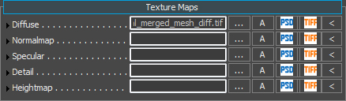
Pic6: Texture map
Shader Generation Params
his tab in the Material Editor will show you different options depending on the shader type you assign to this material SubId. Since we have selected the vegetation shader, it has exposed the options that only apply to the vegetation. To continue, check the box for the Grass parameter. We want our asset to run through a cheaper and faster pipeline.
Note that the Grass parameter forces the material to be two-sided.
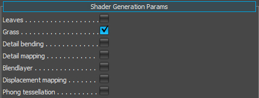
Pic7: Shader Generation Params
Name | Description |
|---|---|
| Leaves | Uses a higher quality rendering pass on the asset (not required for this tutorial). |
| Grass | Uses a cheaper and faster rendering pass on the asset. |
| Detail bending | Used for adding some random noise into the leaves movement (not required for this tutorial). |
| Detail mapping | Used for adding a detail map into the asset (not required for this tutorial). |
| Blend layer | Used for blending a second set of Diffuse and Normalmap textures (not required for this tutorial). |
| Displacement mapping | This is for applying tessellation to the asset (not required for this tutorial). |
| Phong tessellation | This is for applying tessellation to the asset (not required for this tutorial). |
| PN triangles tessellation | This is for applying tessellation to the asset (not required for this tutorial). |
Shader Params
As you may have noticed, we jumped this section in favor of the Shader Generation Params first. We wanted to enable the Grass options first to expose all the parameters that we need to configure the asset correctly. Enabling the Grass parameter has exposed some additional parameters in the Shader Params section. It should now look like this (Pic8).
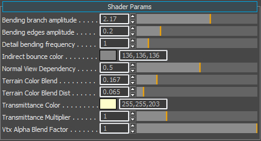
Pic8: Shader Params
Name | Description |
|---|---|
| Bending_branch_amplitude | Detail bending control. Please see this page for information on detail bending (not required for this tutorial). |
| Bending edges amplitude | Detail bending control. Please see this page for information on detail bending (not required for this tutorial). |
| Detail bending frequency | Detail bending control. Please see this page for information on detail bending (not required for this tutorial). |
| Indirect bounce color | Keep this at the default value. |
| Normal View Dependency | This value orients the normals towards the player and is useful for planes. |
| Terrain Color Blend | If you enable UseTerrainColor in the Vegetation Editor for the object, this will absorb some of the color information of the underlying terrain where the vegetation object has been placed. This nice feature helps distant vegetation objects blend into the scene at distance. |
| Terrain Color Blend Dist | This slider controls how close to the camera the absorption of the terrain color will happen. |
| Transmittance Color | This color is what you would get if you were to shine a light through the leaf and look at it from the other side. |
| Transmittance Multiplier | Controls how strong the translucency effect will be. |
| Vtx Alpha Blend Factor | Used for faking AO. If you have applied some vertex paint to the base of grass geometry, you can control the strength of the blend effect with this slider. Technically, we do not need to use this because of technology such as SSDO, SSAO and SVOGI, but sometimes it can help the asset by using this. |
Save the material
Inside the Material Editor, on the top tool bar, click the Save icon.

Pic9: Saving the material changes
Vegetation Editor
Before we continue to configure the material params, it will help if we place some of these grass objects down using the Vegetation Editor to get instant visual feedback as we update the material. We will not go into an in-depth tutorial of the Vegetation Editor here.
For more information of the usage of the Vegetation Editor, please refer HERE.
Create a vegetation category and add the grass
Under the Tools menu option, and select the Vegetation Editor.

Pic10: Selecting the Vegetation Editor
Add a new vegetation group and call it something appropriate (like grass).

Pic11: Adding a Vegetation group
Click the Add Vegetation Object (first button) to add a vegetation object to this category.

Pic12: Adding a vegetation object to the category
In the browse dialog, go to your folder where you saved the asset and select both grass assets:
<Your_Project>\Assets\Objects\tutorial\vegetation\02\grass\merged_mesh\tutorial_merged_mesh_a<_bYour_Project>\Assets\Objects\tutorial\vegetation\02\grass\merged_mesh\tutorial_merged_mesh
Now highlight the object you just added to the category to select it, and you can perform the one of the following operations:
- Enable the Paint Objects button to paint down lots of instances your bush asset, or
- To be more precise, do not select the Paint Objects button (so it's not active) and on the terrain press Shift+LMB to place only 1 instance.
Activating Merged Mesh
Right now the Merged Mesh system is not activated for this category and our painted assets are static.
To activate this feature, inside the Vegetation Editor, click on your grass category or the item within and activate AutoMerged. Your grass field should now be ready and activated to bend with the wind & breeze generation.
Pic13: Static grass field
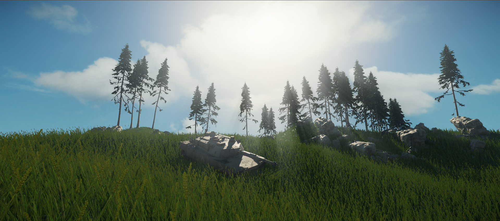
Pic14: Physicalized grass field
You are now able to change some additional values as long as this system is active to influence their behavior.
| Stiffness | Controls how much force it takes to bend the asset. |
| Damping | Reduces oscillation amplitude of bending objects. |
| Variance | Applies and increases noise movement. |
| Air Resistance | Decreases resistance to wind influence. Tied to the Wind vector and Breeze generation. |
Breeze Generation
Tied to the physicalization of our Merged Mesh system is our Breeze Generation feature. This allows us to add randomized breeze forces to the global Wind vector. When activated, this system spawns Physics Proxies boxes and moves them along the surface of the terrain (following the wind vector direction) affecting only vegetation objects with Merged Mesh active.
To activate it, go to the Tools menu -> Level Editor -> level settings.
Within EnvState, we have our Breeze generation section. Enable the check box to activate the Breeze generation system. Make sure to also have a vaule > 0 in any of the the wind vector inputs (XYZ).

Pic15: Breeze generation check-box activated, under the highlighted directional wind vector
You should now be able to see your grass field being affected by this breeze feature.
To visualize the breeze generation in action, enable p_draw_helpers=1 or F10 in-game to enable the standard physics debug view.
There are several more parameters to this system for more control.
BreezeStrength | Control the strength of the breeze that is generated. |
BreezeMovementSpeed | Control the movement speed of the breeze. Works in conjunction with BreezeStrength. You can create rapid gusts of wind, but which only gently move the vegetation. |
BreezeVariation | Adds speed, size, and strength etc. variation of the breezes that are generated. |
BreezeLifeTime | Controls how long each generated breeze should be active. 1 will make a new breeze generate every second. 10 every 10 seconds, etc. |
BreezeCount | Controls the amount of breezes to be generated at one time. |
BreezeSpawnRadius | From the location of the player, define the radius where breezes should be allowed to traverse. Smaller numbers will see more centralized breezes pass the player and larger numbers will vary the passes. |
BreezeSpread | High spread values will allow the breezes to travel in more varied directions around the player. |
BreezeRadius | Controls the size of the generated breeze. |
BreezeAwakeThreshold | Breeze generator proxies will wake idle physicalized objects. |
Debug Information
The easiest way to get instant feedback from the Merged Mesh system about how the breeze is interacting with the vegetation, is to enable the physics debug view: p_draw_helpers=1. This will render the proxies of all your geometry as usual, and additionally it will display the breeze elements as simple cubes running across the terrain.
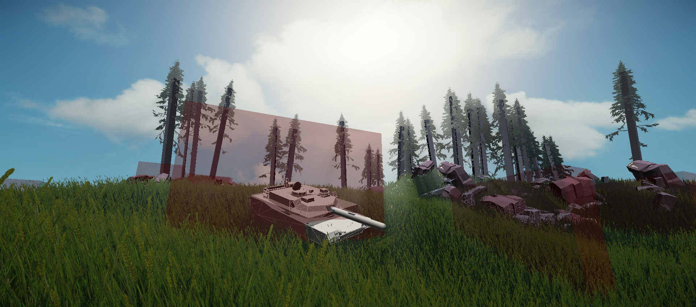
Pic16: P_draw_Helpers=1 (red boxes are the simulated breeze proxies)
Below is a table of the available debug modes you can enable to inspect the merged mesh system.
Name | Value | Description |
|---|---|---|
| e_MergedMeshesDebug | 1 | Displays simple overview of merged meshes statistics. |
| e_MergedMeshesDebug | 2 | Provides position, state, size, sector info and more. |
| e_MergedMeshesDebug | 64 | Displays calculated wind direction. |
| e_MergedMeshesDebug | 256 | Highlights current colliders influencing Merged Meshes. |
| e_MergedMeshesDebug | 544 | Draws spines to see which instances can bend. |
| e_MergedMeshesDebug | 1056 | Draw simulated spines to see current bending state. |
| e_MergedMeshesDebug | 2080 | Draw simulated spines with LOD info. |
e_MergedMeshesDebug=1
This offers a simple overview of the merged mesh system that gets appended to the r_displayinfo = 1 help text. The text displays information about how many active nodes (sectors) instances, spines and mesh data both in (kb) among other information.
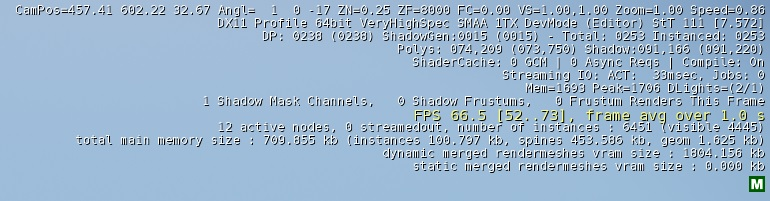
e_MergedMeshesDebug=2
Using this debug view mode (e_MergedMeshesDebug=2) offers the most information as to how the system works from a user standpoint. The Red text down the left side of the screen lists the current states of all the merged mesh sectors.
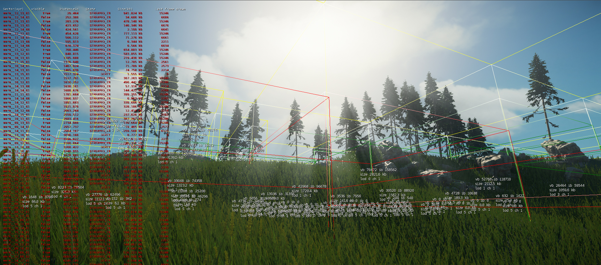
Pic17: Custom level, with Merged Mesh grass assets added and e_MergedMeshesDebug=2 activated to see the clusters
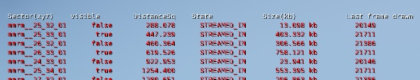
Pic18: Sector info for e_MergedMeshesDebug=2
| Name | Description |
|---|---|
| Sector | The level is broken down into sectors. Each sector has a specific name, using the XYZ location as the guide mmrm__(X)25_(Y)32_(Z)01. |
| Visible | Simply states whether it's on or off screen. |
| DistanceSq | Distance to the sector from the players / camera viewpoint. |
| State | Lists whether the sector is streamed in / out. |
| Size(kb) | Total size (kb) of Mesh and Spine Data for this sector. |
| Last Frame Drawn | If the sector is in view, this number will increase. If the sector is not on screen, it will display the last frame which was drawn. |
The next part covers the bounding boxes that are represented in this view. Here is a simplified view, where an empty level with lots of MM grass objects are placed down.
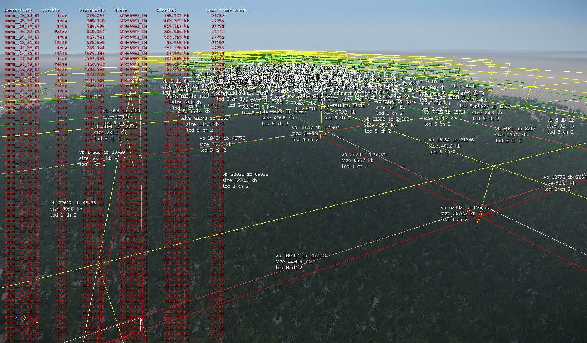
Pic19: Top down view with only the merged mesh grass in view.
Yellow boxes: These are the Sectors that represent a Merged Mesh group. The cell size is 16m x 16m. As soon as you place down one vegetation item (with merged meshes active), this starts a sector automatically.
Red and Green Boxes: Below the Yellow boxes closer to the ground, we have some smaller boxes either red (LOD0) or green (LOD1 and above). These are internal to the Yellow sectors. These will cover the limit of the bounding box of the actual placed vegetation items. If the cell is completely filled, it will be of full 16m x 16m size. But if you only cover a small section of the sector, these red / green boxes will cover just that section. See pic21 further down.
Keep an eye on wasted sectors. Check around the edges of your playable areas in the level. Do you find you have cells with only a handful of vegetation items? If so, are they really needed? Can you get away with not having them? If so, remove them as it is a waste.
Also, this debug view is handy to find any stray merged mesh vegetation items in a level. If there is a singular blade of grass off in the distance, it will have a big 16m yellow bounding box associated with it (You can remove it if it's not contributing to the overall scene).
Sector debug Information: Now we are talking about the text that is associated with each sector. Each sector has this information of about itself. You should find this at the center of each sector.
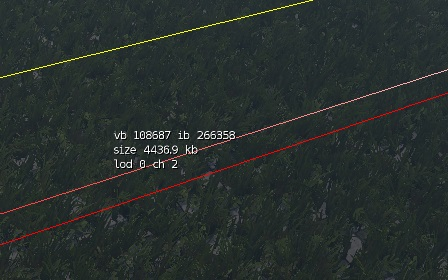
Pic20: Sector debug info
| Name | Description |
|---|---|
| vb | Number of vertices in the Vertex Buffer. |
| ib | Number of indices in the Index Buffer. |
| Size(kb) | Total size (kb) of Mesh and Spine Data for this sector. |
| Lod | This informs you of the current LOD that this sector is in. As mentioned before, it does not use LODs in the traditional sense, but through the merging system it batches the contents of the 16m sectors together and the LOD switching strips out vegetation items from the sector, the further from the camera the sector is. |
| ch | Because of the way the system works (batching), it's good to know how many different material variations you have internally within this sector (less is better). |
ch (Materials per Sector)
This information tells you how many different materials are within this sector. To continue lets reduce down the amount of vegetation on screen to see whats actually happening.
First off, we have only placed down two grass blades in this sector. For example, note how the red bounding box just covers their size limits (bounding box) within the 16m yellow sector in Pic21. In the highlighted info box, see how the ch value is 1. This represents how many active materials there are in this sector.
Duplicate this grass object in the vegetation tool, since we want to use the material override parameter in properties with another material. Once the new material is applied onto another instance of the same geometry, the ch count will increase by one (same geometry, 2x materials). The same increase will happen if we add another different vegetation item, because that will also contain a different material.
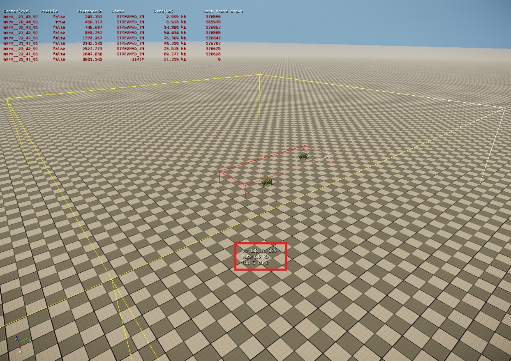
Pic21: Simplified view of the sector with 2 instances of the same vegetation item.
This is a way to keep track of what items you are merging together within the Merged Mesh system. You want to keep this number as low as possible, and the easiest way is to this is by using one large texture sheet with multiple plant textures on it.
For reference, below we have a sample texture originally 2048 x 4096, with around 22 different plants all together. You can create an enormous variety of vegetation using merged meshes and one material, and keep performance as high as possible by sharing the same texture / material within a sector. 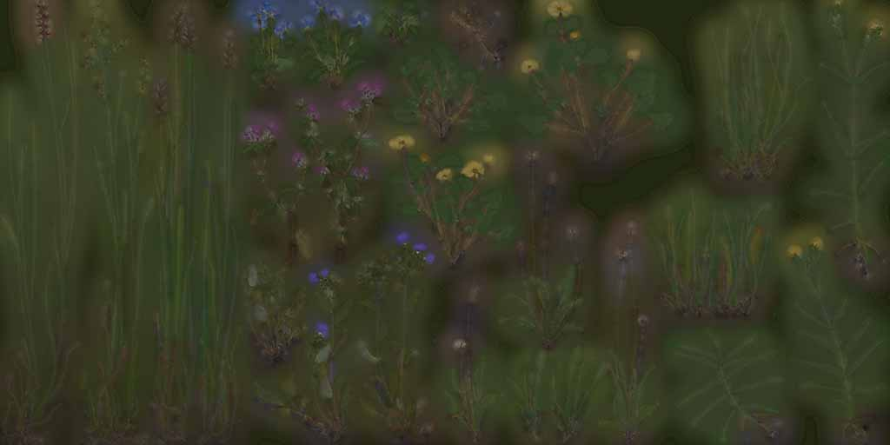
Pic22: Example texture for a grass group used in the above scene in Crysis 3
e_MergedMeshesDebug= 256
With this debug view, we can inspect any entities that interact with the merged meshes. Note the collider spheres around the wheels on the vehicles and the AI character that interact with the merged mesh vegetation.
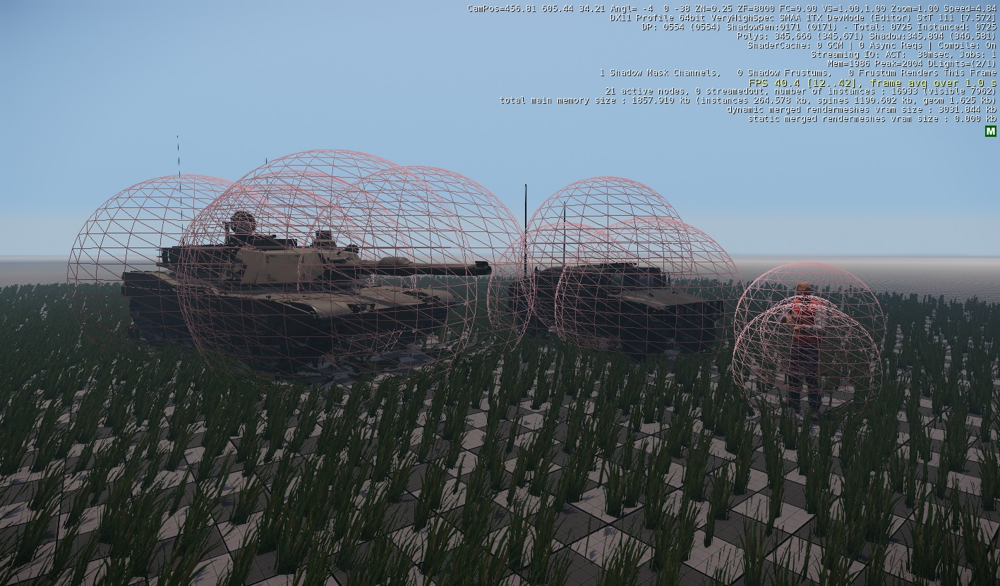
Pic23: Debug view to display the collider geometry within assets that interact with the mm system.
e_MergedMeshesDebug=2080
This view mode allows you to view the rope's LOD state. The further away from the camera, the system automatically starts to deactivate the ropes (red) in favor of the disabled ropes (blue). Note how it's not a hard-line between the On/Off states, but gradually reduces the active ropes over distance until they are all disabled (Blue).
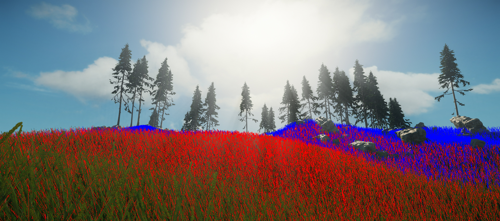
Pic24: e_MergedMeshesDebug=2080 activated to see the rope LOD state (red active, blue inactive)
Further Debugging Info
The following debug commands are also useful to keep in mind while you work with this system:
Name | Description |
|---|---|
| e_MergedMeshes | (Default 1) Shows runtime Merged Meshes. |
| e_MergedMeshesInstanceDist | Distance fudge factor at which Merged Meshes turn their animation off. |
| e_MergedMeshesLodRatio | Merged Meshes LOD ratio. |
| e_MergedMeshesUseSpines | (Default 1) Allows touch bending for Merged Meshes. |
| e_MergedMeshesViewDistRatio | Merged Meshes view distance ratio. |